I am starting this post almost 4 months too late, but I want it here so I can be kept (at least a little) accountable for starting (and finishing!) as many books as I can.
Most of the books I read are recommended by friends. Any others will either be completely random or based on my interest in science, design, psychology or philisophy. Some will be about things that I really think I should know more about, like politics.
Here are the books I have read so far:
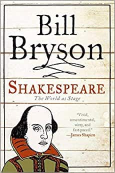Shakespeare - Bill Bryson
A really cool insight into just how hard people have tried to gather reputable, solid evidence about Shakespeare's life and who he actually was. Throughout, it becomes ever clearer that the truth is likely forever lost. I loved the picture that's painted of Shakespearean London, and the antics of other prominent figures from the time period.
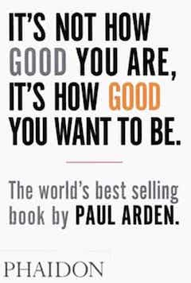It's Not How Good You Are, It's How Good You Want To Be - Paul Arden
Rollercoaster of good ideas that were learned from a career in advertising. Stuffed full of tasty advice on how to be creatively brilliant. Insights into the minds of clients and what they really want. And that they don't want what you think they probably want. We may all hate adverts, but really we are all selling something. "We are all in advertising. It's a part of life."
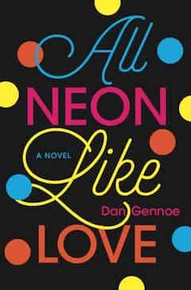All Neon Like Love - Dan Gennoe
First novel I've read in a long time, and I'm proud that I did! This story is a psychological, often dark, and always thorough, look into the mind of a man obsessing over a women he thinks he knows. We hear plenty about his sadness, his thoughts, his anxieties and concerns. Bit hard to get through at times, but I think it's worth it. I like how it made me feel a range of emotions, made me empathise with the characters, and painted vivid pictures using great descriptive language. Think those are signs of a good book.
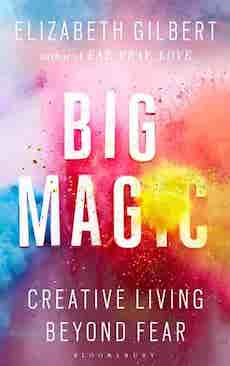Big Magic: Creative Living Beyond Fear - Elizabeth Gilbert
Where can I start with this book. I've never highlighted a book so many times, never read something and thought "yes, I do that" or "that's me!" so many times. This book contains messages that I will never forget. Messages that people are probably generally aware of, but that get buried under fear, anxiety, lack of confidence, doubt etc. It's a rare thing for me to read something and feel so confident that it has changed my life for the better. But this one has. The wise, funny and completely relatable Liz Gilbert has an honest, no-bullshit conversation with you. A conversation that feels like it's over coffee and she's known you for years. Thank goodness for people like her.
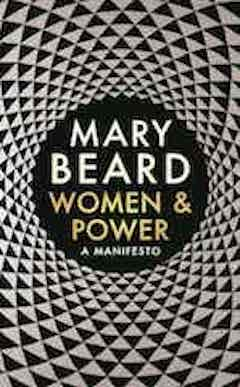Women and Power: A Manifesto by Mary Beard
A short and thought-provoking book. Mary Beard deconstructs some of the history behind the lack of women in power today. She uses clever and interesting analogies and brings together pieces of information that I am sure people who aren't looking might miss. I wish it would have been longer. Definitely a good read for anybody curious about the balance of power between men and women in various positions.
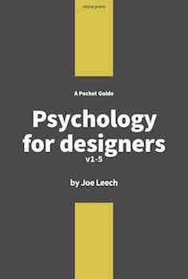Psychology for Designers by Joe Leech
A sweet and short introduction to psychology and design. Joe tells us his story, his experience with academic psychology and human computer interaction. He provides many examples and resources. Reminded me a lot of my own academic studies in psychology. My favourite part was at the end of the book in 'Extras' where he talks about myths and key findings in those areas of psychology that are most important to design. I particularly like the idea of mental models. A really nice little book. There are some spelling and grammar mistakes but I'm personally nitpicky about that stuff.
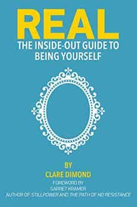Real - The Inside-out Guide to Being Yourself by Clare Dimond
At risk of sounding cliché... where has this book been all my life? I've never read such a pure, real or beautiful book. I repeat the words inside it to myself daily... "There is only the moment, we are merely an idea of a self, thoughts rushing through us like waves. We only exist in the prescence of another. We need nothing, we are already all we'll ever need". Another life-changing book for me. Absolutely and completely.
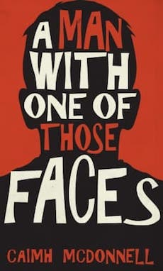A Man with One of Those Faces by Caimh McDonnell
I'm not one to usually go for crime novels, but the prologue made me laugh so I gave it a go. A great thing about this book is that it's set in Ireland and that the author has portrayed everyone's accents and personalities perfectly. The characters are great. I love the way the story twists and turns and is really not that predictable at all. Looking forward to reading the next three books in the series!
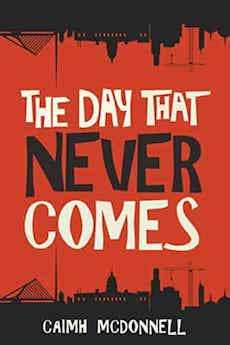The Day That Never Comes by Caimh McDonnell
Just as funny and surprising as the prequel!
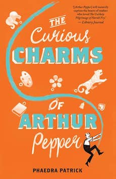The Curious Charms of Arthur Pepper by Phaedra Patrick
A lovely book that had lots of English-y things for me to identify with. It is very centered around communication between family members and about the struggles normal people face. There were lots of moments that had me nodding my head and feeling emotional - especially where Arthur was reflecting about his life. Really glad I picked this little gem up.
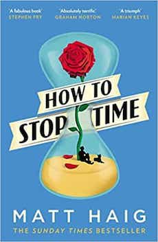How To Stop Time by Matt Haig
Saw a friend reading this on Sunday afternoon, July 8th and by Tuesday evening, July 10th I had finished it. Beautifully and poignantly written. I could barely put it down and couldn't wait to pick it up again. I got lost in the fascination of a person's experience through time. Great messages in the book as well. I am sure anyone would enjoy many of the quotes in there. I loved it, loved it, loved it. Even if it rather often reminded me of a movie script.